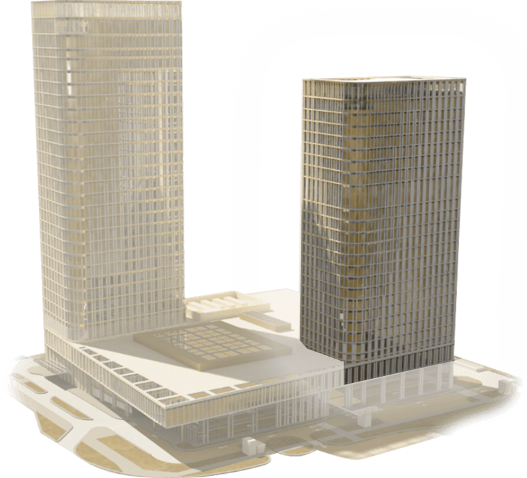

Заказчиком многофункционального комплекса Talan Towers выступила казахстанская компания Astana Property Management, которая входит в группу Верный капитал. В портфеле холдинга есть и другие успешные проекты в сфере недвижимости: отели класса - The Ritz Carlton, Moscow, The Ritz-Carlton, Vienna и Rixos Borovoe. Также холдинг управляет офисными зданиями Park View Office Tower и Pine Office Park в Алматы.
vernycapital.comАрхитектором комплекса Talan Towers выступила американская компания SOM (Skidmore, Owings Merrill LLP) – одна из крупнейших компаний в сфере архитектуры, дизайна интерьеров, инжиниринга и городского планирования в мире. С момента основания в 1936 году, компания реализовала более 10.000 проектов в 50 странах мира. Высотное строительство — одна из главных специализаций фирмы SOM. Так, авторству компании принадлежат такие всемирно известные небоскребы, как Burj Khalifa (Дубай, ОАЭ), John Hancock Center (Чикаго, США), а также World Trade Center (Манхэттен, Нью-Йорк, США). Talan Towers – первый проект SOM, реализованный в Астане.
На сегодняшний день SOM — единственная компания, которая дважды была награждена премией Architecture Firm Award от Американского Института Архитектуры. Также деятельность фирмы была отмечена наградой Pritzker Prize, считающейся эквивалентом Нобелевской премии в области архитектуры. Всего на счету SOM более 2000 профессиональных наград.
дизайн интерьеров отеля от английских архитекторов
Разработкой интерьера отеля занималась компания Richmond International, которая существует с 1966 года и обладает устойчивым реноме на рынке проектирования фешенебельных резиденций, эксклюзивных отелей и ресторанов. На протяжении всего своего существования компания не раз создавала проекты для отелей сети The Ritz-Carlton в самых разных уголках планеты, а в Астане старалась отразить в дизайне местный колорит.
Так, например, деревянные резные вставки, украшающие Лобби-лаундж Өzen, были вдохновлены ландшафтом Мангистауских гор. Лобби отеля преображают освещенныенастенные панели, которые напоминают об окаменевших хвойных лесах озера Каинды; тогда как полы на стойке регистрации, украшенные металлическим цветочным узором,олицетворяют лучи которые исходят от основания лестницы и скульптуры Джона Кравчика. Стоит отметить, что в оформлении интерьера использованы самые благородные породы мрамора и дерева, поэтому уже сейчас отель The Ritz-Carlton, Astana оценивается многими экспертами как архитектурный шедевр.
дизайн офисного пространства
Pringle Brandon Perkins +Will – одно из самых успешных мировых архитектурных бюро в Великобритании и регионе EMEA (страны Европы, Ближнего Востока и Африки), специализирующихся на дизайне интерьеров рабочего пространства и коммерческой архитектуре. Специалисты бюро работали над офисными интерьерами для Microsoft, Google, Coca-Cola, Siemens, Unilever, Bank of China, а в 2016 году приложили руку и к одному из самых инновационных проектов в столице — Talan Towers Offices. В этом проекте они стремились сохранить много света и разработать пространство, в котором чувствуется свобода. Поэтому было решено использовать элементы высокой архитектуры: нужную высоту потолков, колонны внутри здания.
При этом часть интерьера отделана теплыми материалами (натуральным камнем и высококачественным деревом), которые согревают пространство. По признанию экспертов выбранный дизайн настолько прост, универсален, удобен и хорош, что актуален сейчас и будет востребован через много лет.
Основная концепция Talan Towers заключалась в создании центра притяжения в столице – так называемого lifestyle, meeting place, где можно было бы проводить за встречами/приятным досугом/шопингом целый день. Креативное архитектурное агентство Callison занялось тем, чтобы превратить люксовую торговую галерею Emporium в динамичное пространство, в каждой детали которого отражалась бы философия роскоши и гостеприимства. Именно поэтому каждый представленный в галерее бутик соответствует мировым стандартам и разработан с учётом тенденций оформления коммерческим зон премиум-класса.
Многофункциональный комплекс Talan Towers — первый и единственный многофункциональный комплекс в Казахстане, получивший международный сертификат LEED (Leadership in Energy and Environmental Design) в категории GOLD. Стандарты зеленого строительства LEED, разработанные американской организацией United States Green Building Council (USGBC) в 1993 году, направлены на проектирование сооружений с меньшим вредом для окружающей среды. Достичь необходимых показателей можно за счет экономии воды и электроэнергии, а также поддержания здоровья людей, работающих в этом здании.
Соответствовать принципам экологичного и инновационного строительства Talan Towers позволило внедрение в том числе таких «умных» решений:
- технология зеленой кровли с капельным орошением;
- энергоэффективные лифты;
- специальное энергосберегающее остекление;
- солнечные батареи;
- повторное использование дождевой воды;
- зарядные станции для электромобилей.
наведите курсором на здание, чтобы рассмотреть структуру расположения объектов
Структура многофункционального комплекса Talan Towers включает в себя объекты различного функционального назначения, в числе которых на сегодняшний день офисы Talan Towers Offices, отель международного уровня The Ritz-Carlton, Astana, резиденции The Ritz-Carlton Residences, Astana, торговая галерея Emporium, рестораны и The Ritz-Carlton SPA,Astana.